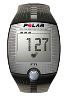

Пульсометр Polar FT1
Для первых шагов в тренировках, основанных на сердечном ритме
подробнее
-
Вы услышите звуковое оповещение о нужном
пульсе во время
тренировки;
-
Вы увидите информативный графический
индикатор целевых
тренировочных зон пульса;
-
Также Вы увидите информацию о расходе калорий
за тренировку;
-
Вы сможете посмотреть данные по 10
тренировкам.
назад
отзывы клиентов
Новые цели - новый гаджет!
Спасибо, RunSmart!
С ними подготовился к своему первому полумарафону! Спасибо!!!
Позвонила, ребята поинтересовались моими целями и подобрали очень интересный вариант со скидкой! Теперь бегаю и наслаждаюсь бегом! Пробежала уже 2 полумарафона и несколько более коротких забегов и не намерена останавливаться!
Спасибо!!!